Chapter 4 Results
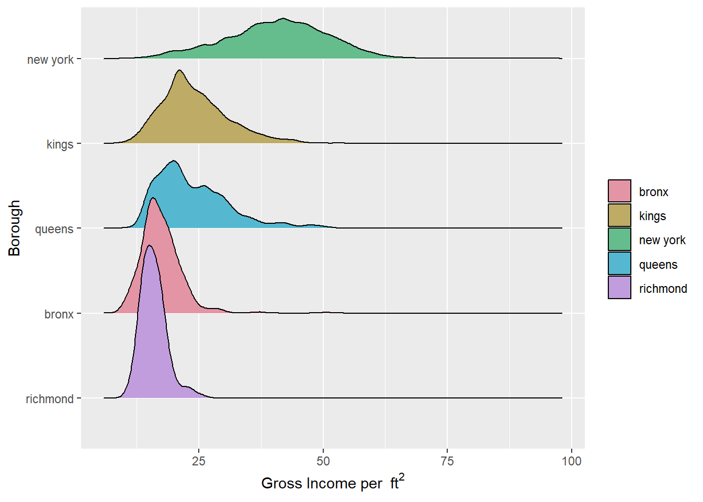
From the ridgeline plots of the gross income per square feet in five counties of NYC, we can see that they all roughly follow a normal distribution (with Queens having a little more deviation). New York has the largest median value about 40/\(ft^2\) and the widest spread. For the rest 4 counties, their median values are close to each other. The values for richmond is more densely distributed.
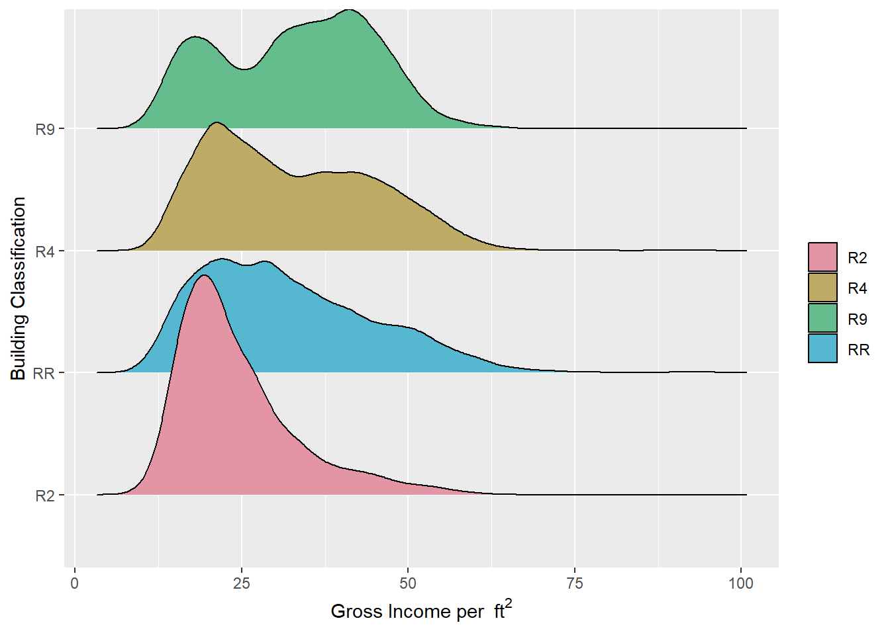
From the ridgeline plots of the gross income per square feet in 4 building classes of NYC, we can see that they all have similar price range and roughly follow a left-skewed distribution. The distribution of R9 class is a little special. It roughly follows a bimodal distribution.
## Year.Built Market.Value.per.SqFt
## 108 3
## Full.Market.Value Estimated.Expense
## 2 1
## Expense.per.SqFt Boro.Block.Lot
## 1 0
## Condo.Section Address
## 0 0
## Neighborhood Building.Classification
## 0 0
## Total.Units Gross.SqFt
## 0 0
## Estimated.Gross.Income Gross.Income.per.SqFt
## 0 0
## Net.Operating.Income county
## 0 0
## house_type
## 0According to the counts of missing values in each column, we can see that the majority of NAs are about when the building was built. As there are too many variables, we focus our analysis only on those with at least one missing value.
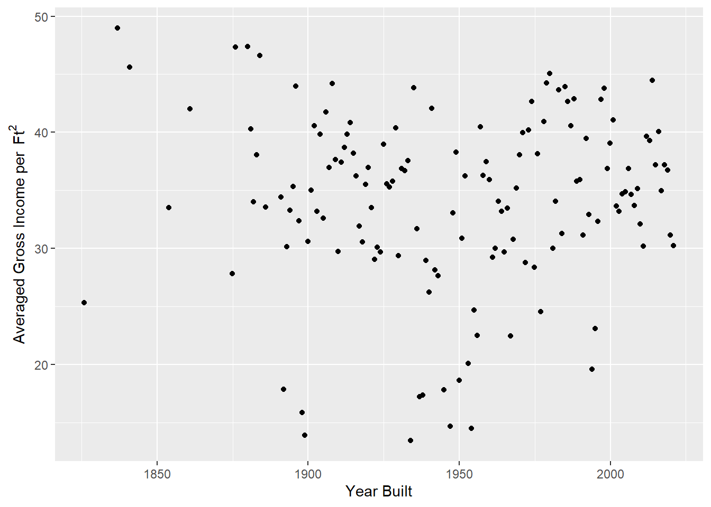
In this plot it seems that the gross income averaged on area is independent from the year the building was established. However when we separate the calculation based on different counties, we obtain the following graphs.
Plot 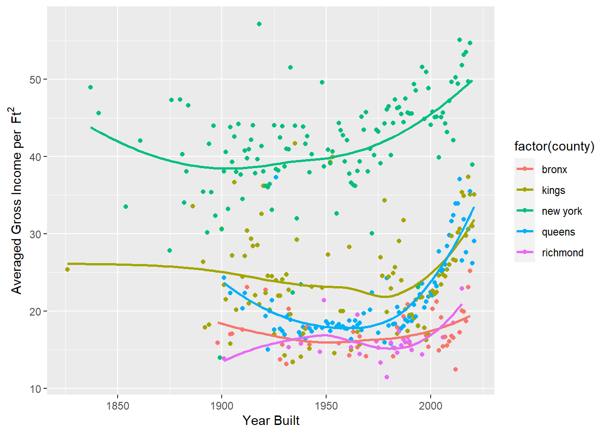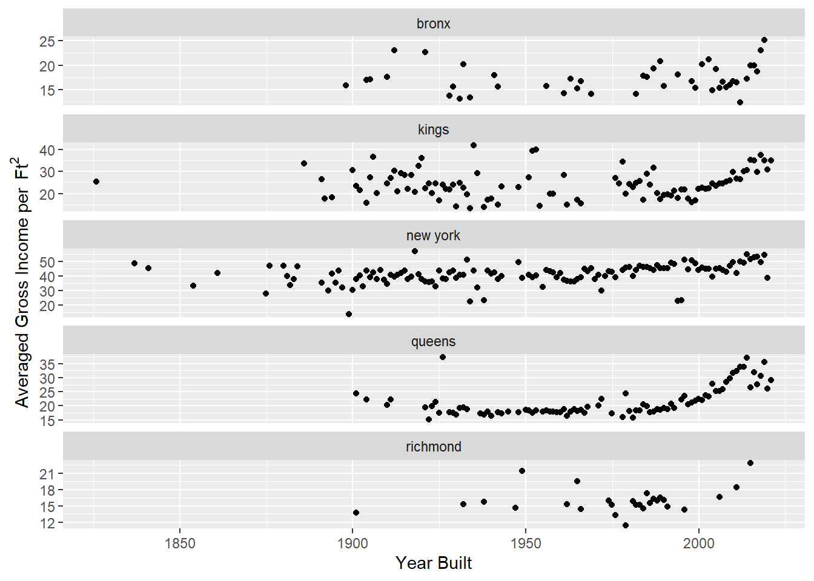
For all the five counties, we can see a increasing trend in the gross income per \(ft^2\) versus the year when the building was built after around 1970s, and the slope becomes more obvious in recent 20 years. Except for Richmond County, the curves for the other 4 counties first went downward before 1970s. The average gross income for Bronx County and Richmond County varies slightly regarding the establishing year while it changes relatively a lot for the other 3 counties.
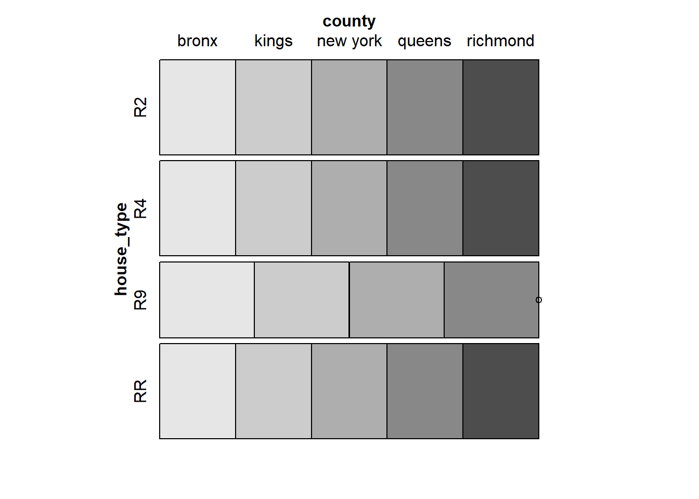
This mosaic plot shows the proportion of different housing types in different regions. This reveals the popularity of different room types, and combined with other visual analysis, we can further analyze the impact of room types on rental.
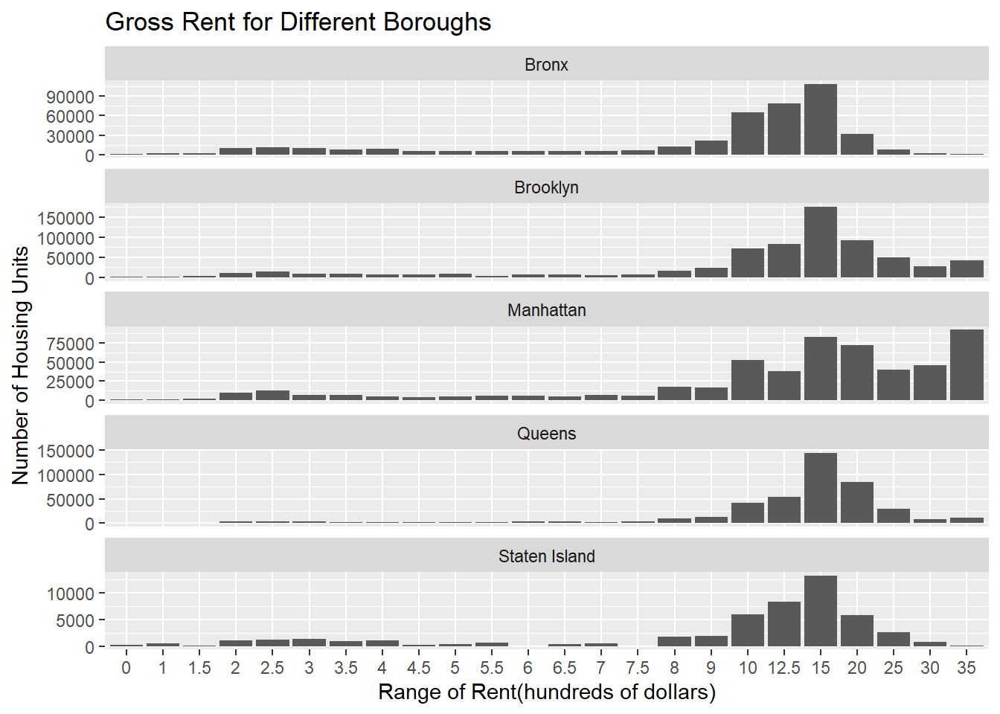
This histogram shows the the gross rent for different boroughs using 1-year estimate in 2021. The distributions of the rent in Brooklyn, Queens and Staten Island are approximately distributed and most of values fall in the range ‘$1,500 to $1,999’. The distribution for Bronx is left skewed. Most of housing units in Manhattan have the rent price higher than 3500 dollars. We also notice the size of data for Staten Island is smaller than other boroughs, which means its rental market is less buoyant than elsewhere.
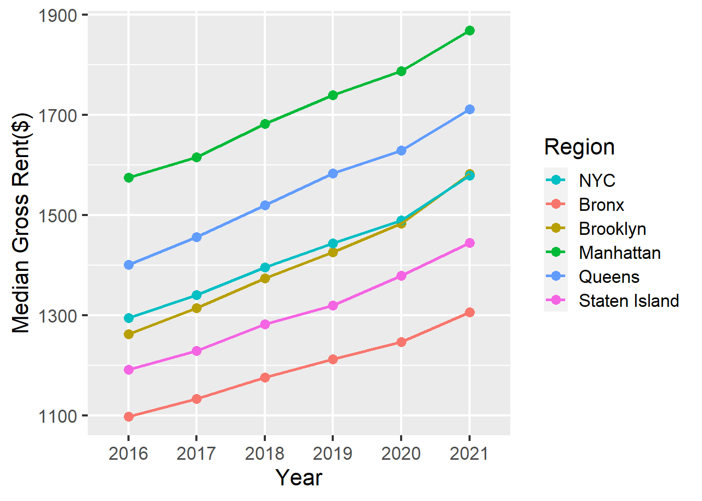
This line chart shows the median gross rent for different boroughs. Because we use the 5-year estimate, the trends are very pronounced. The gross rent has been rising steadily in the past five years. The increasing rates are very similar among different boroughs. The line for Brooklyn is closet to the line for NYC. The order of the median gross rent from high to low is: Manhattan, Queens, Brooklyn, Staten Island and Bronx for all the years.
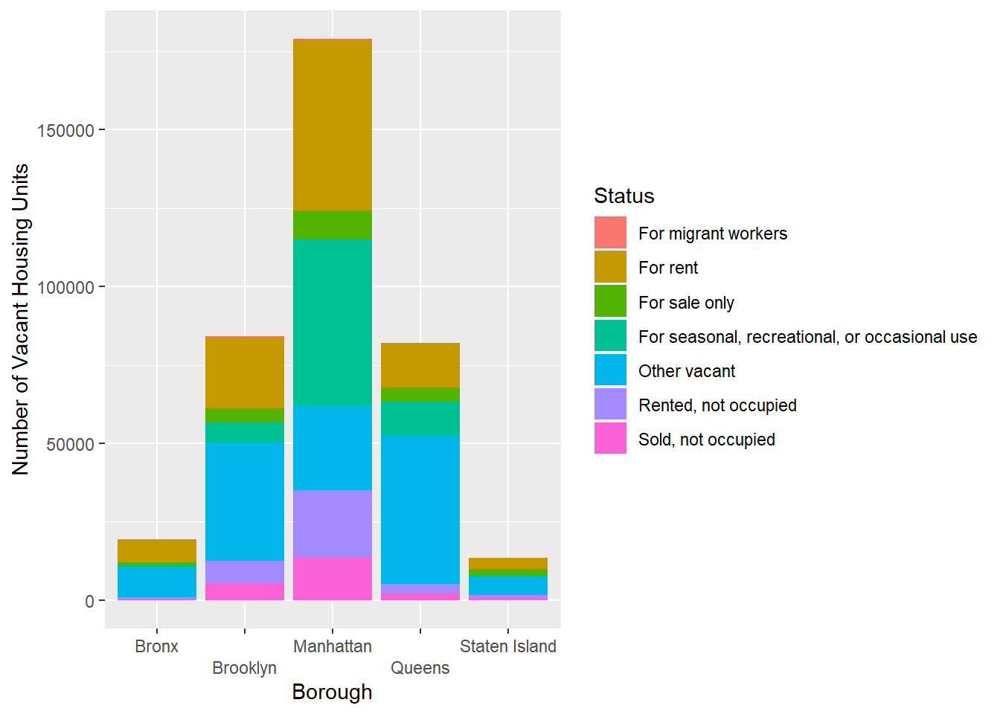
This stacked bar plot shows the number of vacant housing units and their vacant status in different boroughs in 2021. Manhattan has the most vacant housing units, and the status ‘For rent’ and ‘For seasonal,recreational,or occasional use’ make up the most of them. The underlying reason might be the impact of epidemic, which prevent people from renting housing units in Manhattan since its has the highest price over all the boroughs. While for the other four boroughs, other types of vacancy make up the largest proportion. We can further analyze the reason of this kind of vacancy structure.
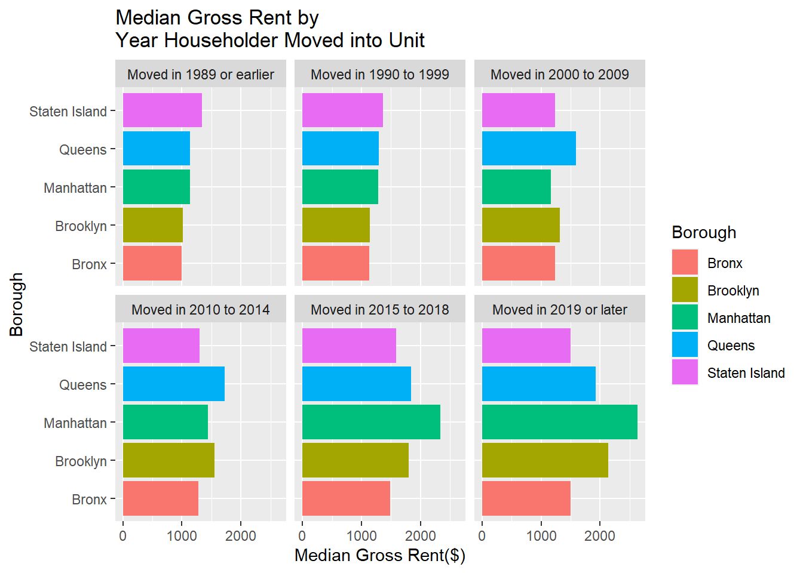
This plot uses the year householder moved in as its facet. From this plot, the median gross rent has been increasing with the time the householder moved in. We know that some buildings will maintain a close rental price when the residents renew the tenancy agreement. The gaps among the median gross rent can reflect the change of the rental marketing market over time. It is obvious that the median gross rent increased the most for housing units in Manhattan. We can further analyze the data by investigating what happened in the time period between 2014-2018.
Two inputs are needed to build a choropleth map: A geospatial object providing region boundaries and a numeric variable that we use to color each geographical unit. We use the geoJSON format which provides the ZIP code boundaries in New Yor City and the median gross rent of housing units per code. We transform the geospatial object to a data frame using the tidy function of the broom library and bind it with the numeric data. For the regions without corresponding value, they will be filled in color grey in the map.
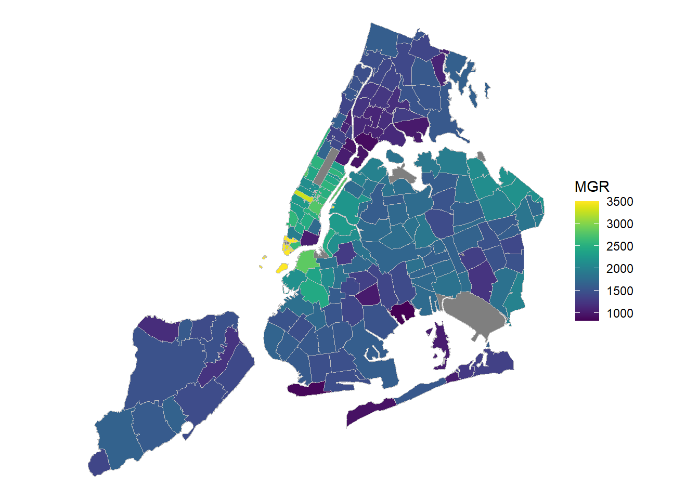
From this choropleth map, we can notice that the overall situation of the rent in the five boroughs correspond with what we have analyzed for other plots. According to the distribution of the color, the order of rental price from high to low is: Manhattan, Queens, Brooklyn, Staten Island and Bronx. To be more specific, the median gross rents in Lower Manhattan and Midtown Manhattan are significantly higher than other regions. The rent in the area near the River Easter is much higher than its average in Brooklyn. Although not far from midtown Manhattan, the regions near the boarder between Manhattan and Bronx has relatively low value for the median gross rent. This map can be used to connect with other index such as crime rate to do deeper analysis of the cause of different rental price.